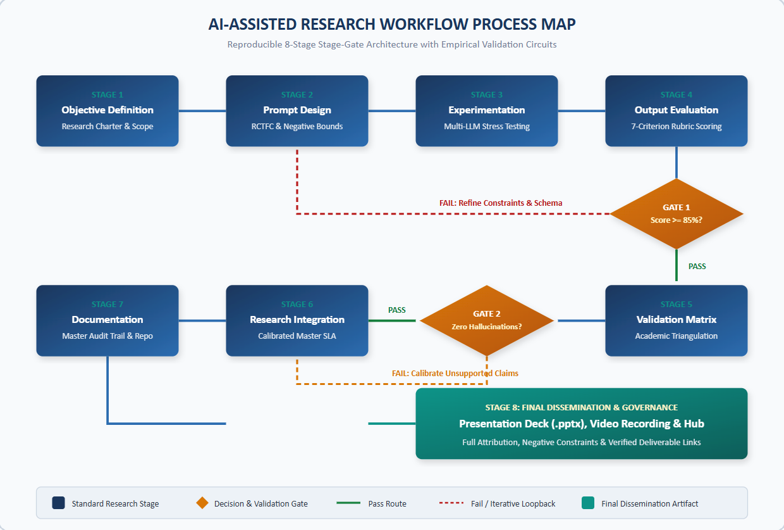
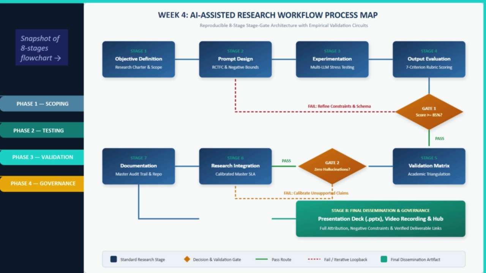
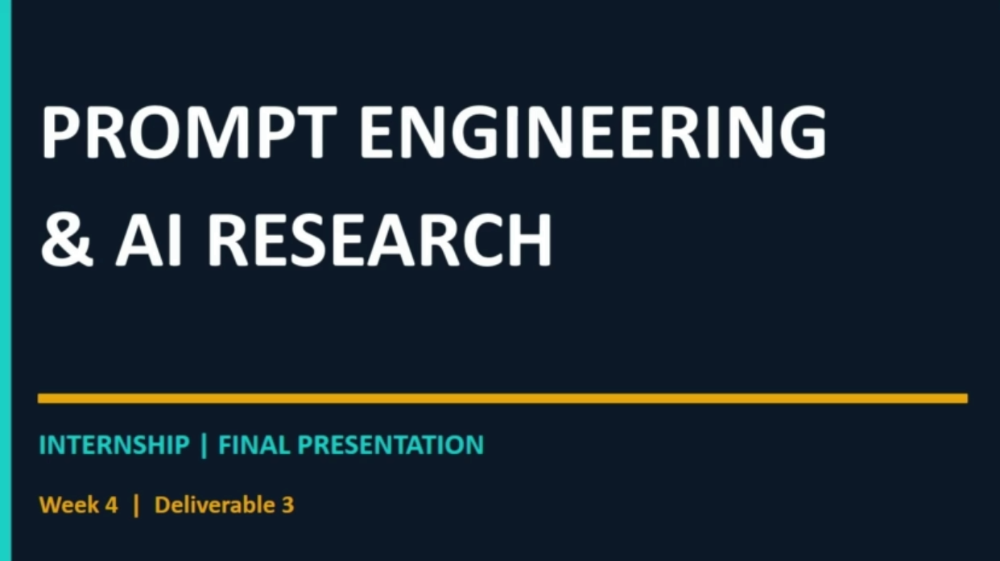

Home / Projects / Case study 05
Case study 05 · Internship · Excelerate and RIT ★ Week 4 Team LeadEngineering an 8-Stage, Two-Gate AI Research Workflow That Refuses to Hallucinate
Prompt Engineering Research & Integration remote internship (Excelerate and Rochester Institute of Technology). I co-designed a reproducible, empirically validated AI research workflow: RCTFC prompt architecture, forensic 7-criterion scoring, and a zero-hallucination gate. As Week 4 team lead, I managed the final week's tasks and led Team 10 through the final project and its presentation.
LLMs hallucinate convincingly, flatter the user (RLHF sycophancy), and hide weak claims inside beautiful formatting. Our research team needed a workflow with real quality control: gates that either pass an output forward or loop it back for repair.
Case study: a personalized 4-week language-learning plan for adult beginners (CEFR Pre-A1/A1, 30 min/day): a domain where confident but wrong advice ("conversational fluency in 10 hours") has real human cost. Every output was scored, validated, and calibrated.
Week 1: Prompt architecture (RCTFC)
Designed structured prompts with the RCTFC framework (Role, Context, Task, Format, Constraints); built a template library for literature reviews, market research, opportunity descriptions, and assessments, plus a 3-iteration reflection log that lifted outputs from broad summaries to evidence-grounded, table-formatted deliverables.
Week 2: Experimentation
Ran 3 progressively structured prompt variations (Basic → Structured → Constrained) on ChatGPT GPT-4o and Claude 3.5 Sonnet; scored on a 7-criterion rubric: 24/35 → 32/35 → 33/35 (94.3%); output quality rose in direct proportion to prompt specificity.
Week 3: Forensic validation
Deconstructed outputs into a 10-claim matrix verified against peer-reviewed second-language-acquisition literature, CEFR standards, and Cognitive Load Theory; ~90% verified. Claim 10 ("unscripted conversation within 10 hours") was caught and calibrated to an evidence-backed 2-minute guided formulaic dialogue.
Week 4: Blueprint & governance (I led this week)
As Week 4 team lead, I managed the final week's tasks and led Team 10 through the close of the project: co-authoring the 8-stage and 4-phase workflow (Scoping → Testing → Validation → Governance) with exactly two decision gates (documented below), assembling the reusable 10-prompt repository, and defining the 4 governance safeguards: the formatting trap, negative bounds vs sycophancy, offline alternatives for the digital divide, and full reproducibility. The process-map video below is my own walkthrough, recorded as lead.

The process map: 8 stages across 4 phases, with the two diamond decision gates and their loopback routing lines.
Gate 1: the 85% benchmark gate (after Stage 4)
Gate 2: the zero-hallucination calibration gate (after Stage 5)
Why exactly two gates?
Workflow or automation?
- The sharpest lesson of the internship: our highest-scoring output (33/35) also contained the most serious hallucination; polish is not truth. A validation gate is non-negotiable for any output someone might act on.
- Delivered a workflow any team can reuse, with full audit trails from prompt version to calibrated claim.
How I opened our team presentation
The video of this opening is captured inside the full final presentation recording below: it plays there, so no separate link is needed.
The 8-stage workflow process map
My own recording as Week 4 team lead, refined edit: I explain the two decision gates and the loopback routing lines.

▶The edited standalone version of the process-map segment, so the workflow can be studied on its own. Click to load (streams from Google Drive; nothing autoplays).
The complete Week 4 presentation recording
The entire team recording, including both of my segments: the team introduction at the start and the workflow process-map walkthrough. I managed this final week as team lead.

▶Click to load (streams from Google Drive; nothing autoplays). The slide deck is available separately: open the deck →